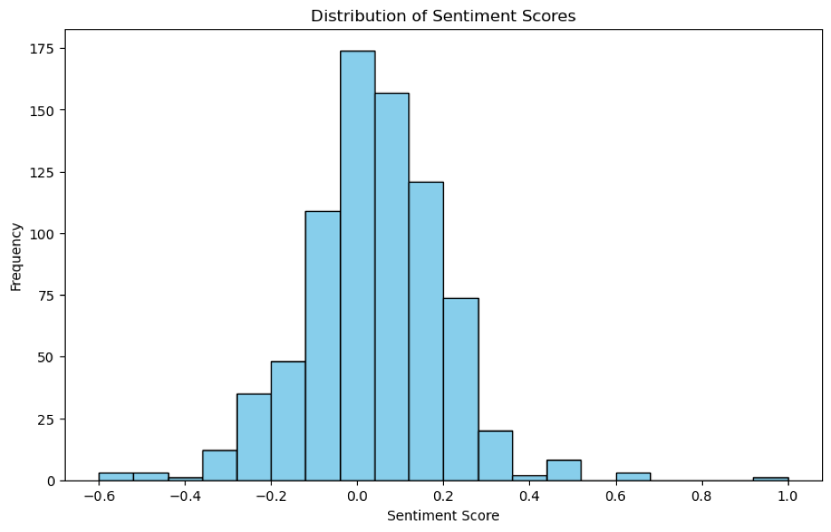

Sentiment Analysis with an Automated Data Pipeline
This project aims to explore the potential relationship between news articles and stock price fluctuations within the technology sector using sentiment analysis of New York Times articles. Our investigation focuses on the top 25 technology stocks that comprise the XLK stock (the Technology Select Sector SPDR Fund). We hypothesize that weekly average sentiment scores extracted from news articles related to these companies might show a predictive link to the weekly high stock price of the XLK index fund.
We chose to work with the New York Times API to pull out an abundance of key textual features such as abstract, headline, lead paragraph, title, and snippet. This project incorporates GCP and MongoDB to store data and Airflow to pull data from the stock and NYT API on a weekly basis, allowing us to make updating and current stock predictions.
Dataset Overview
Our project utilizes two main datasets: the New York Times article data and the XLK stock data. The most recent 100 days from the current date was chosen to be our timeframe for analysis and prediction. For this timeframe, we pulled out 877 documents relating to our top 25 tech stocks. The features of these documents included web URL, snippet, lead paragraph, abstract, publication date, document type, news desk, and headline. Only the textual features and date were kept for analysis.
For our stock data, we pulled the last 100 days of data relating to the XLK stock. These features included the timestamp, opening price, closing price, daily high, daily low, and volume traded. We decided to use the daily high and then take the weekly high from that seven-day time window as our target variable.
Objectives
- Building Data Pipeline: Utilize Airflow, Google Cloud, and MongoDB to automate the daily retrieval, storage, and preparation of textual data from the New York Times for analysis, ensuring an efficient and streamlined data processing workflow.
- Exploratory and Predictive Analysis: Investigate the correlation between New York Times article sentiments and stock price movements within the technology sector, especially for the top 25 stocks in the XLK index. Employ machine learning models, notably XGBoost and TF-IDF embeddings, to predict stock prices and explore the efficacy of sentiment analysis versus comprehensive textual analysis.
- Advanced Analytical Models: Implement advanced time series models like SARIMA or Prophet alongside machine learning to analyze stock data. This approach aims to enhance prediction accuracy by integrating textual features, striving for robust results in forecasting stock price changes.
Data Pipeline
The data pipeline is designed to automate the extraction, processing, and analysis of news articles. It starts with fetching articles from The New York Times API based on specific keywords and date ranges. This data is then uploaded to Google Cloud Storage (GCS) using Apache Airflow, which orchestrates the workflow as a Directed Acyclic Graph (DAG). Within this workflow, one task uploads the raw data to GCS, and a subsequent task downloads this data and writes it to MongoDB for persistence. The final component of the pipeline involves Databricks pulling the aggregated data from MongoDB to conduct Exploratory Data Analysis (EDA) or to run machine learning models, completing an end-to-end process that manages data from collection to actionable insights.
Data Pre-Processing
In our project's data processing stage, we initially filtered datasets to focus on the top 25 tech companies, emphasizing artificial intelligence and GPT keywords via APIs. Utilizing SparkSQL, we refined our data, ensuring uniform formats, particularly for dates and texts within the news dataset. A key step involved converting textual content to lowercase to standardize the data, crucial for enhancing sentiment analysis accuracy. We also introduced a 'sentiment' column calculated with TextBlob to quantify each article's sentiment score, providing valuable insights into prevailing attitudes towards these tech firms. Finally, we merged the news dataset, rich with sentiment scores and reformatted content, with the stock dataset containing date and price information.
Machine Learning
The line graph juxtaposes the sentiment of news articles against stock prices over time from November 2023 to March 2024. It reveals fluctuating sentiment scores alongside a generally increasing trend in stock prices. While there are instances where sentiment dips or spikes appear to correlate with stock price movements, the overall pattern suggests a complex relationship that may not be directly causal or consistently aligned.
The histogram illustrates the frequency distribution of sentiment scores, showcasing a central tendency around neutral with a slight skew towards positive sentiments. The bulk of the data clusters around the central values, indicating a prevalence of neutral to mildly positive news sentiment with few instances of extreme positive or negative sentiment.
The two scatter plots illustrate the performance of two XGBoost regression models predicting stock high prices over time, one using sentiment data and the other using text data processed with TF-IDF embedding.
- The first model, which relies solely on sentiment data, resulted in a Mean Squared Error (MSE) of 131.77 and an R2 score of 0.2116. The scatter plot likely corresponding to this model shows a notable dispersion between actual and predicted high prices, indicating a moderate fit at best. The low R2 value suggests that sentiment data alone may not be a strong predictor of stock prices.
- The second model, which uses TF-IDF embedding of text data, shows improved performance with a significantly lower MSE of 51.58 and a much higher R2 score of 0.6914. The corresponding scatter plot would show a tighter clustering around the line of parity (where actual and predicted values are equal), indicating that the model predictions are more closely aligned with the actual stock prices. The higher R2 value here implies that the inclusion of text data provides a better foundation for predicting stock prices, capturing more of the variance in the data.
In summary, the analysis suggests that text data, when processed through TF-IDF embedding, is a much more effective input for predicting stock prices than sentiment scores alone. This could be due to the richer information content in the full text, which encompasses more nuanced signals than sentiment scores can convey.
Conclusion
In conclusion, our investigation into the correlation between news article sentiments and stock price fluctuations in the technology sector, focusing on the top 25 technology stocks within the XLK stock index, has yielded quantifiable results. Through the application of sentiment analysis, TF-IDF word embeddings, and predictive machine learning models such as XGBoost, we explored how public sentiment, as captured in New York Times articles, impacts market dynamics.
Our data pipeline began with querying articles from the New York Times API, filtering based on industry and headline keywords related to the tech sector. The data was then uploaded into GCS via Apache Airflow and transformed through various aggregations in MongoDB. The aggregated data was then pulled by Databricks to be used as input for our XGBoost predictive model.
Our analysis revealed that while sentiment analysis provides a foundational understanding of news tone, it was the textual analysis through TF-IDF embeddings that significantly enhanced the predictive accuracy of stock price movements. Specifically, the model utilizing TF-IDF embeddings to analyze text data demonstrated a marked improvement in performance, evidenced by an MSE of 51.58 and an R2 score of 0.6914. In contrast, the sentiment-only model resulted in a higher MSE of 131.77 and a significantly lower R2 score of 0.2116, indicating a weaker predictive capability when relying solely on sentiment scores. The discrepancy between the performance of the two approaches can perhaps be attributed to the depth of information captured through TF-IDF embeddings, which may provide a more accurate reflection of market sentiments and trends than sentiment scores alone.
Lessons Learned
The development and implementation of a comprehensive data pipeline played a pivotal role in this project, offering several key lessons:
- Automation with Apache Airflow: Streamlined the extraction, processing, and analysis of news articles using API, enhancing efficiency and allowing for real-time prediction.
- Integration of Cloud Storage and Databases: Solutions like Google Cloud Storage and MongoDB facilitated seamless data storage and retrieval, ensuring data persistence and accessibility.
- Utilization of SparkSQL: Enabled efficient data refinement and standardization for accurate analysis.
- Feature Engineering and Selection: The incorporation of machine learning models, particularly XGBoost regression with TF-IDF embedding, highlighted the importance of feature engineering and selection in predictive modeling.
- Comparative Analysis: The analysis underscored the significance of leveraging textual content for more accurate stock price predictions, as text data processed through TF-IDF embedding proved to be more effective than sentiment scores alone.
Overall, the project emphasized the importance of a well-designed and optimized data pipeline in enabling end-to-end data management and actionable insights generation for complex analytical tasks.